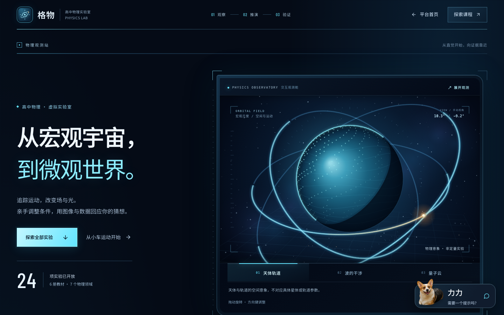
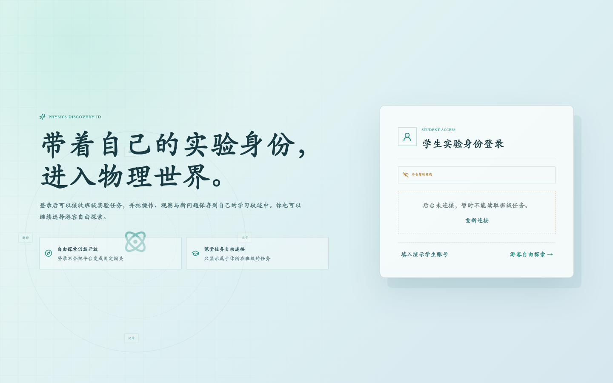
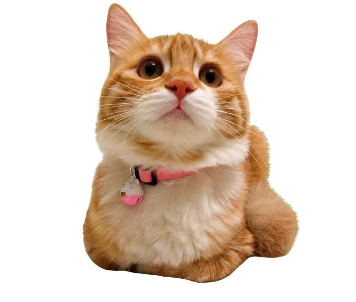

A MAKING-OF STORY · 物理实验平台 V2
从一个教学想法
到一座物理实验室
我如何与 ChatGPT / Codex 持续对话，研究开源项目，修改代码与物理模型，把已有初中平台扩展为可探索的初高中实验产品。
24项高中开放实验
2位实验助手：光光与力力
1条“提出问题 → 验证 → 再改”的路线
产品截图：本地高中首页 · 公开部署仍待完成
02
THE STARTING POINT / 起点
先认识已有产品，再决定改哪里
我最初想知道：这个平台究竟有哪些内容？后端在哪？哪些旧文件还需要保留？

初中端已有学生入口、实验探索与教师功能。这次工作是继续升级已有产品，而不是从空白项目开始。
01盘点主工程与周边资料
区分运行代码、教材研究、历史安装包和扫码体验说明。
02弄清前端、后端和物理模型
网页负责操作；纯物理包负责计算；后台负责账号、班级、任务与记录。
03整理成后续能改的结构
按职责放置文件，避免每加一个实验就把公式、动画、存储写在一起。
我的追问：“整理一下这个平台的代码架构” → 形成后续开发的目录边界
依据：项目总览 · 代码架构 · 当前可见对话02 / 14
03
HUMAN × CODEX / 协作方法
我怎样把 Codex 用成开发伙伴
一个问题不会自动变成成熟产品；每轮都要经过提出、研究、实现、验证与反馈。
持续迭代
不是一次生成
01 我提出目标“交互更强，物理要准确，还要有高中专区。”
02 Codex 查证阅读代码、课程资料与开源项目，拆成可验证的改动。
03 Codex 实现改模型、页面、助手与后台；记录来源和适用边界。
04 自动与实机检查数值测试、页面操作、构建；真实设备仍单独验收。
05 我继续反馈“还是不行”“再有科技感一点”“手机直接用二维”。
人负责判断：教学目标、体验感受、优先级、最终验收。
Codex 负责协助：研究、写代码、运行检查、说明未验证的部分。
关键方法：提出具体问题，再要求可见结果与验证证据03 / 14
04
CONVERSATIONS THAT CHANGED THE PRODUCT / 真实对话
我说了什么，产品就怎样变化？
三段可见对话节选。省略号表示删去中间文字；结果来自后续多轮工作。
01
“整理一下这个平台的代码架构”
→
分清代码责任
网页、API、物理计算、知识与助手各归其位。新增实验沿结构继续开发。
02
“高中的这个界面…没有初中的那个高级”
→
重做高中视觉
首页、字体、空间层次与工作台反复调整；“科技感”和“天体、量子”又推动下一轮。
03
“手机端不好显示的…直接呈现二维的”
→
手机二维优先
电脑保留三维，手机默认二维；视图切换共用当前物理状态与实验记录。
我的作用：提出目标、亲自看效果、指出不足，再决定下一轮的方向。
依据：当前可见对话 · 阶段验收记录04 / 14
05
OPEN SOURCE FIELD NOTES / 开源学习地图
“去 GitHub 学好的项目”——具体学了什么？
我要求 Codex 带着项目里的真实问题去研究，而不是随便列几个仓库名称。
问题驱动
开源研究看文档 → 看许可 → 提炼原则 → 独立实现
PhET Pendulum Lab
实验教学：观察、定量测量、模型解释分层。
PhET Joist / Scenery
工程架构：同一物理模型服务多种视图。
myPhysicsLab / CircuitJS1
物理过程：方程与读数分离；切换保留历史。
React Three Fiber / Drei
三维仪器：相机控制、按需渲染、性能预算。
Moodle / Moodle App
课堂记录：学生提交、教师反馈、本地与在线分层。
xAPI / Learning Locker
可靠同步：操作标识、重试、冲突和归属。
借鉴设计思路；不复制第三方仿真源码、素材或品牌。
依据：高中开源参考 · 实验档案开源参考（历史调研）05 / 14
06
WHAT I LEARNED / 从研究到自己的设计
参考别人的好项目，学的是方法
这些原则落到了项目代码里，但教材模型、页面和实验交互按自身目标实现。
01
模型与画面
分开
物理包计算参数与时间对应的结果。二维与三维读取同一结果，改外观不应改公式。
MODEL / VIEW
02
先操作，
再谈证据
让学生预测、控制变量、保存读数、解释图像；不能把理论答案当作学生已测数据。
INQUIRY / EVIDENCE
03
三维为学习
服务
观察视角帮助看清空间关系；按需加载与重绘，手机保留清楚可操作的二维路径。
3D / 2D
04
开源仍有
边界
分别核对仓库的许可证和维护信息；公开可读，不代表素材、代码和商标都可直接移用。
LICENSE / ATTRIBUTION
从“看到一个好项目”到“知道为什么借鉴、借鉴了什么、没有借鉴什么”。
依据：开源调研记录 · 开发 workflow06 / 14
07
THE SYSTEM / 架构剖面
让每个文件待在该待的位置
这回应了我反复强调的“文件要有逻辑”；以后找问题和加实验都更清楚。
apps/web首页 · 初高中实验 · 教师页面 · 二维/三维
packages/physics公式、参数、时间和数值边界；不依赖网页
packages/knowledge教材目录、知识与 24 项生活案例
packages/harness光光／力力的规则、提示和追问
packages/contracts前后端共享的数据形状与约定
例如：修正单摆公式先改物理包；改善力力说法改助手规则；两种视图同时读取更新后的结果。
依据：平台代码架构 · 开发 workflow07 / 14
08
FROM SIX TO TWENTY-FOUR / 高中专区
“先把高中的实验补齐一下”
高中专区不是一下做完：先建六个样板，再打磨重点实验，最后扩到 24 项。
06
首批样板：建立共同工作台
匀变速、牛顿第二定律、抛体、单摆、电源内阻、双缝干涉；把参数、时钟、图表与记录接起来。
+04
重点深化：让器材和记录更真实
弹簧逐级加载、共点力独立试配、机械能六位置纸带、电容器分段开关历史。
+14
领域扩展：形成 24 项开放实验
继续覆盖碰撞、折射、电磁感应、热学、光电效应、带电粒子等主题。
产品截图：当前本地单摆实验页。完整工作台还包含模型曲线、读数、记录与适用条件。
每项实验都尽量形成：可操作条件 → 模型反馈 → 读数与图像 → 保存证据 → 解释边界。
依据：高中产品设计 · 实验扩展验收08 / 14
09
PHYSICS, NOT JUST ANIMATION / 物理准确性
我要求的是会动，也讲得对
物理检查落实到公式、变量、单位、操作前提和原始读数，而不是只看动画是否顺滑。
CASE 01 / PENDULUM
单摆：小角条件不能省
T ≈ 2π√(L / g)
摆长量到球心；大摆角不能直接套用小角近似。手动计时保留学生的起止选择。
CASE 02 / NEWTON II
牛二：系统边界要画清
M = m(车) + m(挂码)
两者都属于运动系统；启动后绳张力不能直接当作挂码重力，比较时要控制其他变量。
CASE 03 / DOUBLE SLIT
双缝：条纹与间隔不同
Δx ≈ λL / d
跨过 n 条亮纹只有 n−1 个相邻间隔；屏内仅有一条亮纹时不能完成读尺。
共同底线：模型计算、自动采样、手动虚拟读数、真实仪器测量必须分清，不能互相冒充。
依据：高中物理模型说明 · 单摆、牛二与双缝验收记录09 / 14
10
VISUAL ITERATION / 视觉与交互
“还不够高级”之后，反复做了什么？
你既要求更强的物理科技感，也要求实验能真正操作；视觉和器材交互一起迭代。
你的反馈 ①“交互感觉太少”
单摆释放点、碰撞前后对照、多用电表接法、折射临界角等逐项改进。
你的反馈 ②“需要科技感好一点的那种”
首页转向深空观测站：天体轨道、波的干涉、量子云意象与更清楚的仪表层级。
你的反馈 ③“可以在更佳科技感一点吗？”
继续调整字体、三维台面、光照、材质和动态节奏，而不是停在第一版。 画面里的宇宙意象是探索入口；可得出物理结论的，仍是单独建模和验证的正式实验。
产品截图：本地高中首页；依据：视觉升级与四样板改进记录10 / 14
11
TWO TUTORS / 光光与力力
让助手看懂实验，而不只是聊天
你选择的重点：“实验辅导能力：看懂操作、指出问题、分步提示”。
光光
初中实验伙伴
- 结合当前实验和操作线索提醒下一步
- 区分学生记录与系统计算值
- 按观察、操作、证据给分级提示

力力
高中柯基实验伙伴
- 对应 24 项实验的条件和限制
- 检查记录、接住“为什么／现在呢”
- 结合生活案例解释模型与类比边界

学生提问→读取当前条件→检查阻断与证据→给可执行提示
规则能确定的问题优先本地答复；联网 AI 可在可用时参与解释，但不能编造学生做过的实验。
依据：助手设计、生活案例与相关回归测试11 / 14
12
MOBILE FIRST, WHEN NEEDED / 移动端取舍
手机上，先让实验可读可做
你提出：不好显示的三维实验可直接呈现二维；这变成了设备默认视图策略。
同一模型，
两种观察方式
电脑可用三维观察空间关系；手机默认二维读数。切换视图保留参数、时钟和记录。
还做了触控目标、横屏、安全区与聊天键盘适配。真实手机与微信内体验仍须完整验收。
本地 Edge 桌面与窄窗截图；右侧是浏览器模拟窄屏，不等于真实手机验收。
依据：移动端第 40—42 阶段记录12 / 14
13
EVIDENCE BEFORE CLAIMS / 质量验证
做完代码后，怎样知道它可靠？
一项功能要经过不同层次的检查；每一层只能证明它真正覆盖的范围。
02交互流程测试
改参、暂停、记录、恢复、身份隔离。
03服务与助手测试
接口校验、来源区分、异常降级与追问。
04工程构建检查
类型、架构依赖、生产打包和资源预算。
05真实使用验收
浏览器画面、手机触屏、GPU、教师审阅。
≠
这些“通过”并不等价
自动测试通过，不代表所有画面都被人看过；窄窗截图，也不能证明真机触屏一定顺畅。
这也是为什么阶段记录要写清：修了什么、怎么测的、还缺什么证据。
依据：开发 workflow · 阶段验收文档13 / 14
WHERE THE PROJECT STANDS / 当前进度
作品已经能展示，
公开使用还要走完最后一程。
我想让别人通过网址或二维码使用它。现在需要把本地成果、教学审阅、真实手机验收与独立服务器部署接起来。
NOW / 本地成果可以展示制作过程
已有初中实验、高中 24 项本地实验、二维／三维、教师空间以及光光和力力。
NEXT / 补充证据让老师与学生试用
核对课程与物理模型；完成真机触屏、性能、完整记录流程与真实反馈。
THEN / 对外访问完成独立站点联调
物理产品与另一网站在同一服务器上独立运行；公开子域名尚待验收。
这是一个由人的教学判断和持续反馈驱动、由 Codex 协助研究与开发的进行中作品。
依据：制作过程稿 · 服务器准备记录；线上状态以正式验收为准14 / 14